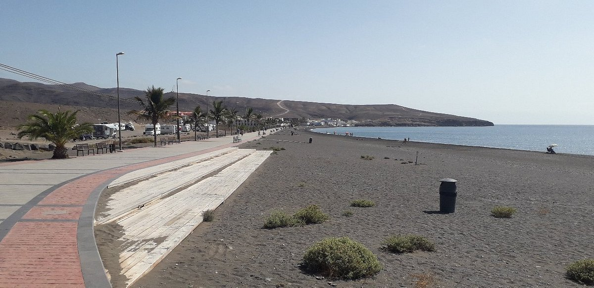
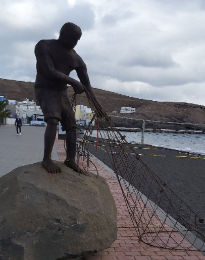
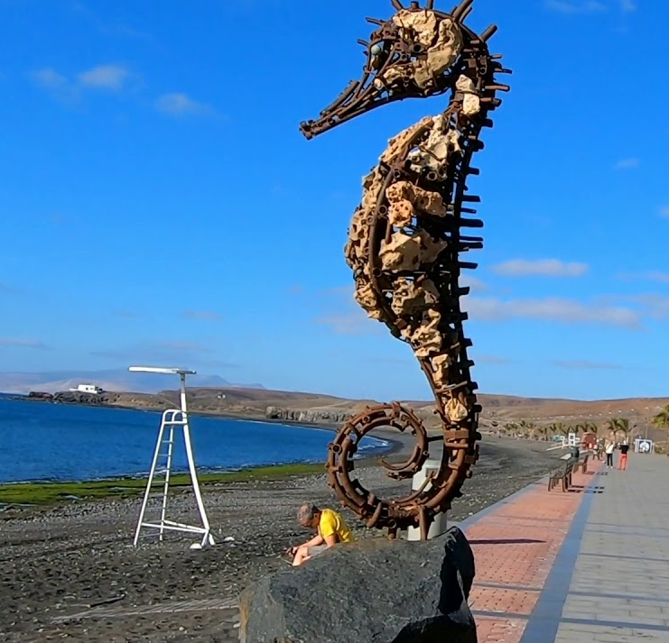

Atrakcje w okolicy
Strona Główna
Miejsce
Hotel
Atrakcje
W samym Tarajalejo nie ma zbyt dużej ilości atrakcji. Znajdują się tam jednak punkty warte odchaczenia.

Playa de Tarajalejo - plaża

Statue Pescador De Suenos

Statue Of A Seahorse